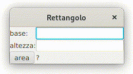

Per ricapitolare la base delle interfacce grafiche viste finora insieme all'uso di dati di tipo numerico proviamo per esercizio a costruire un programma che calcola l'area di un rettangolo: in pratica questo qui sotto.

Potrebbe essere una buona idea a questo punto provare a farlo da solo, in ogni caso qui sotto c'è il programma con alcune spiegazioni inserite come commenti nella parte di calcolo. Supponiamo che i lati del rettangolo siano numeri interi, del resto per i numeri in virgola mobile cambia molto poco.
Il programma
import javafx.application.Application;
import javafx.scene.Scene;
import javafx.scene.control.Button;
import javafx.scene.control.Label;
import javafx.scene.control.TextField;
import javafx.scene.layout.GridPane;
import javafx.stage.Stage;
public class Rettangolo extends Application {
Label lBase = new Label("base:");
TextField tfBase = new TextField();
Label lAltezza = new Label("altezza:");
TextField tfAltezza = new TextField();
Button bArea = new Button("area");
Label lArea = new Label("?");
@Override
public void start(Stage finestra) {
GridPane griglia = new GridPane();
griglia.add(lBase, 0, 0);
griglia.add(tfBase, 1, 0);
griglia.add(lAltezza, 0, 1);
griglia.add(tfAltezza, 1, 1);
griglia.add(bArea, 0, 2);
griglia.add(lArea, 1, 2);
bArea.setOnAction(e -> calcolaArea());
Scene scena = new Scene(griglia);
finestra.setTitle("Rettangolo");
finestra.setScene(scena);
finestra.show();
}
private void calcolaArea(){
// dichiaro la variabile "area" che userò dopo
int area;
// leggo il contenuto della casella, è un testo
// quindi uso una variabile di tipo String
String testoBase = tfBase.getText();
// a me serve però il numero corrispondente
// così che io possa usare la variabile "base"
// per fare la moltiplicazione
// quindi devo trasformare un testo in un numero intero
// es: "56" → 56
int base = Integer.parseInt(testoBase);
// posso fare in un solo passaggio quello che ho fatto
// nelle due righe di programma sopra
int altezza = Integer.parseInt(tfAltezza.getText());
// calcolo l'area del rettangolo
area = base * altezza;
// scrivo l'area nell'etichetta, siccome però nelle
// etichette posso scrivere soltanto dei testi
// concateno (uso il +) una stringa vuota ""
// alla variabile int area in modo da avere un testo
// un po' l'operazione inversa fatta da Integer.parseInt
// 12 → "12"
lArea.setText(""+area);
}
public static void main(String[] args) {
launch(args);
}
}
Per esercizio si può aggiungere il pulsante per calcolare il perimetro.